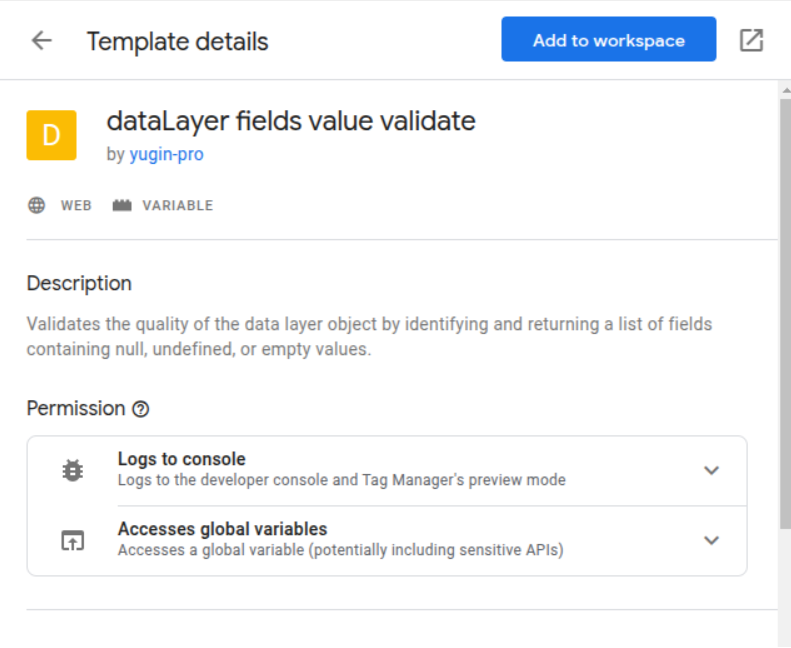

Custom Template Variable Now in Google Template Gallery
I am excited to announce that I have created a custom template variable dataLayer fields value validate, and it is now available in the Google Template Gallery. This new template allows users to easily integrate and manage this custom variable within Google Tag Manager, enhancing their tracking and analytics capabilities by Validating the quality of the dataLayer object and returning a list of fields containing null, undefined, or empty values. 
Key Features
- User-Friendly Interface: Simplifies the process of setting up and managing data quality variables.
- Customizable Options: Offers flexibility to tailor the template to specific needs.
- Enhanced Tracking: Improves the accuracy and efficiency of data collection.
How to Access
- Open Google Tag Manager.
- Navigate to the Templates section.
- Search for the custom template variable in the Gallery.
- Add it to your workspace and configure it as needed.
I hope this new template will help streamline your tag management process and identify dataLayer discrepancies for your projects. Feel free to reach out with any feedback or questions!